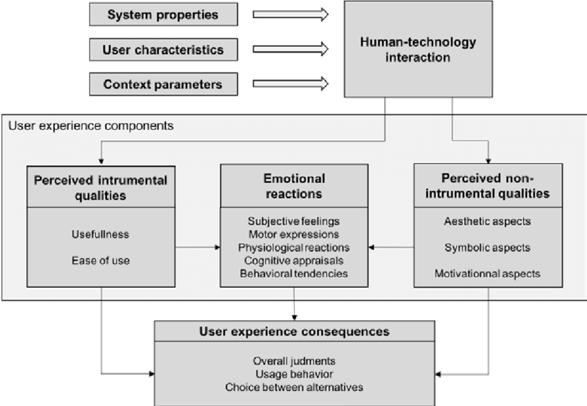

This is unit 7 e-Portfolio activity. The topic is based on Emotional reactions’ of user experience in relation to to the ‘Components of User Experience’ model from Van der Linden et al., (2019).
In response to the question - As a Project Manager, what might be your response to manage the emotional reactions of a customer? Based on the model below.
As a Project Manager, managing the emotional reactions of a customer from a psychological view is crucial for project success and ensuring a consistent positive relationship with stakeholder. A key approach to this involves leveraging emotional intelligence (EI), especially in areas such as:
Emotional intelligence is vital in understanding and responding to customers' emotional states, enabling project managers to defuse tense situations and create a more collaborative environment (Clarke, 2010; Zhang et al., 2023).
Empathy allows project managers to understand and validate a customer’s perspective, making them feel heard and valued. By acknowledging their concerns and frustrations, project managers can establish trust, which is essential for resolving conflicts (IPM, 2023). For instance, if a customer is frustrated due to delays, a project manager with high EI would not only provide solutions but also acknowledge the emotional impact of the delay on the customer.
Active listening involves paying close attention to verbal and non-verbal cues, ensuring that the customer feels understood (Virine & Trumper, 2015). This fosters better communication and helps prevent escalations by addressing concerns early on.
A project manager must be attuned to changes in tone or body language that signal dissatisfaction or concern, which enables timely interventions (Zhang et al., 2023). This awareness can help project managers to steer conversations in a constructive direction, ultimately safeguarding the project's progress.
Lastly, effective relationship management ensures that emotional responses are handled in a way that strengthens the partnership. By fostering open communication and demonstrating emotional resilience, project managers can not only address immediate emotional reactions but also build a long-term, positive rapport with the customer (Clarke, 2010).
In conclusion, emotional intelligence is essential for project managers to manage the emotional reactions of customers effectively. Through empathy, active listening, and relationship management, project managers can create a supportive environment that encourages collaboration and resolves emotional tensions efficiently.